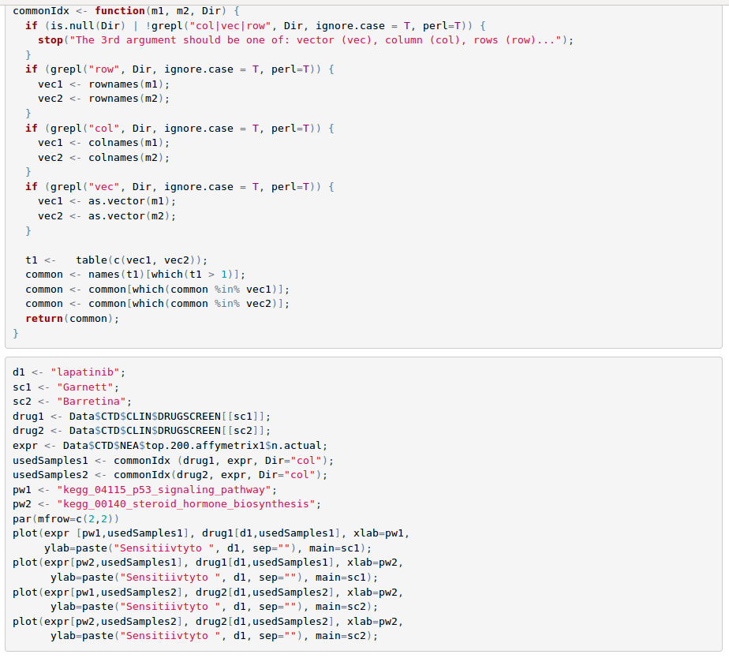

How to use stand-alone R software for NEA
The same procedures that run at the web site can be more systematically implemented using the package
NEArender. It contains basic functions for network and gene set enrichment analyses, creating, re-formatting, and saving gene set lists, as well as benchmarking the networks.
Installation of NEArender package
NEArender can be installed from R CRAN directly within R environment. The only recommendation is to install first the required package ROCR (it might be sensitive to some other dependencies).
Create Altered Gene Sets (AGS) input file
We first could create a set of AGS that distinguish each cell line sample in the collection from
the others.

Importing Functional Gene Sets (FGS) and Networks
Plotting the gene frequency distribution demonstrates that the most of the genes are quite
unique (below). Next, we run the network enrichment analysis, analyzing enrichment of each
of these cell-line specific AGSs against each of the 330 pathways in the FGS collection

top
Run NEA
We now are in the position to identify pathway -level correlates of drug sensitivity, such as these two pathways associated with resistance to lapatinib . Furthermore, this correlation can be traced between two independent drug screens (Barretina et al., 2012 and Garnett et al., 2012) . While using original gene expression values, such correlation would be much weaker

The two pathways seems to have discovered a global trend: correlation coefficients from the two drug screens correlate with each other, too
top